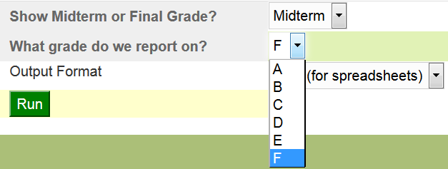

Presentation Outline - Drop-in Reporting with Groovy
Introduction
This is a REAL solution to a real problem. why
We have over 600 Oracle Reports applications that need to be converted into a new and non-deprecated format. These reports produce everything from CSV files to paychecks.
Oracle Reports isn't well suited to creating data files, so there had been an unfilled need for some time, but Oracle has started to give hints that Reports won't be around forever. We needed a new solution.
It started with a dream. what
Many of our reports are essentially an SQL query, which we have to embed in some kind of program, which would be SQL*Plus, Oracle Reports, a web application, PL/SQL web pages, or other complicated tools). What if we could just drop that query into a container that will do the work of getting the parameters and formatting the output? Or, if it is more complicated, how about a simple DSL that will let us specify the bare minimum of what we need?
I had the idea of storing the SQL in the database and serving them through SSB (mod_plsql), but then Groovy and Grails came into my life.
Making it happen how
Groovy gives us the power to make this dream a reality.
Groovy has features that make this idea practical. Some of them are common to any programming language, and some of them are unique to Groovy.
- Common Properties
- Dynamic SQL (PL/SQL can do it, but it is brittle and I usually regret using it.)
- Read and write from the file system
- Read and write web protocols
- Runs on the Java Virtual Machine (which makes it easy to deploy applications through Tomcat and opens the door to a huge library that is easy to access through Maven repositories)
- Unique
- Easy-to-use interface for SQL and XML
- Closures and functional programming
- Builders and DSL's
- "Easy" web applications with Grails
Implementation
- A POGO library which defines the DSL and executes the reports
- A Grails application that provides a user interface for the report library
- Perhaps other front ends in the future
- Jasper Reports for fancy report delivery
Overview
General Principles why
Open source tools
These tools require no licensing fees and are generally high quality and developer-friendly.
Plain text
Environment agnostic
What do these reports look like? example what
Let's see what kind of reports are possible.
SQL example sql
The simplest report we can define is an SQL statement.
- sql/dd_referencing_objects.sql
/* List all objects that reference this one. */ select d.referenced_owner r_owner, d.referenced_name r_name, d.referenced_type r_type, d.owner, d.name, d.type from all_dependencies d where d.referenced_name like upper(:object_name) order by referenced_owner, referenced_name, referenced_type, name, type
Note the bind variable in the query, :object_name. When we run the report, it displays a parameter form with that parameter.

Let's enter
jcc_gbr_email, the name of one of our packages, and look at the CSV output.R_OWNER,R_NAME,R_TYPE,OWNER,NAME,TYPE JCC,JCC_GBR_EMAIL,PACKAGE,JCC,JCC_GBR_EMAIL,PACKAGE BODY JCC,JCC_GBR_EMAIL,PACKAGE,PUBLIC,JCC_GBR_EMAIL,SYNONYM
Simple Groovy SQL Example groovy
Our second example shows a simple case of the Groovy-based DSL.
/** A report that lists the tables belonging to a particular schema */ report(title: 'List User Tables') { // Create a parameter for the owner of the table param(name: 'owner', label: 'Owner') { // Add a list of values that excludes Oracle schemas and // schemas that don't own any tables list_of_values query: """select username from all_users where oracle_maintained = 'N' intersect select owner from all_tables""" } // A second parameter for the table name. Make it default to '%' param(name: 'table_name', label: 'Table Name', description: 'List tables matching this value, with Oracle wildcards.', 'default': '%') // Get the data from an SQL query. This references the parameters with // a colon. sql query: """select table_name, comments from all_tab_comments where owner = :owner and table_name like upper(nvl(:table_name,'%')) and comments is not null order by table_name""" }

This gives us the following result.
| TABLE_NAME | COMMENTS |
|---|---|
| T_CENSUS_ROSTER | This table has one row per course per term. |
| T_STU_CENSUS_ROSTER | The roster of students in this course |
Groovy Dynamic SQL Example groovy
Here is a table (SUMMIT_GRADES) with mid-semester grades and final grades.
| STUDENT_ID | SEMESTER | MID_GRADE | FINAL_GRADE |
|---|---|---|---|
| 12 | 201612 | A | A |
| 13 | 201612 | C | B |
| 14 | 201612 | F | A |
| 12 | 201705 | B | A |
| 13 | 201705 | C | A |
| 15 | 201712 | F | D |
report(title: "Grade Totals") { param(name: 'mid_or_final', label: "Show Midterm or Final Grade?", 'default': 'F') { list_of_values values: [['F', 'Final'], ['M', 'Midterm']] } param(name: 'grade', label: 'What grade do we report on?', 'default': 'F') { list_of_values values: ('A'..'F').collect{[it, it]} } dynamic_sql sql_closure: { params -> // Use the selected grade column String mid_or_final = params.mid_or_final; String grade = params.grade; String grade_column = (mid_or_final == 'M')?'mid_grade':'final_grade' """ select semester, count(${grade_column}) as ${grade_column}, sum(decode(${grade_column}, :grade, 1, 0) ) ${grade}_grades from summit_grades group by semester order by semester """ } }

select semester, count(mid_grade) as mid_grade, sum(decode(mid_grade, :grade, 1, 0) ) F_grades from summit_grades group by semester order by semester
Groovy Closure Example groovy
/* Produce a report from an arbitrary Groovy script. */ report() { data_generator closure: { column(name: "num", label: "Number") column(name: "square", label: "Square") column(name: "cube") (1..5).each { row(num: it, square: it*it, cube: it*it*it) } } }
| num | square | cube |
|---|---|---|
| 1 | 1 | 1 |
| 2 | 4 | 8 |
| 3 | 9 | 27 |
| 4 | 16 | 64 |
| 5 | 25 | 125 |
Groovy Closure Example 2 groovy
Let's look at an example that would be very hard to do in most reporting tools.
SQL> select * from summit_sql;
| ID | SQL_QUERY |
|---|---|
| 1 | select user from dual |
| 2 | select sloozle from fleem |
This table holds two SQL select statements, one of them valid and the other probably not.
/** A second closure query example */ report(title: "Invalid Summit Queries") { data_generator closure: { column(name: 'id', label: "ID"); column(name: 'sql_query', label: "SQL Query"); column(name: 'error', label: "Error"); def queries = sql.rows("select * from summit_sql order by id"); queries.each { q -> query_row = [id: q.id, sql_query: q.sql_query, error: '']; try { // Beware of Groovy's GString String explainQuery = "explain plan for ${q.sql_query}" sql.execute(explainQuery); } catch (java.sql.SQLException e) { query_row.error = e.getMessage(); } if (query_row.error?.size()) { row(query_row); } } } }
| id | sql_query | error |
|---|---|---|
| 2 | select sloozle from fleem | ORA-00942: table or view does not exist |
Jasper Reports jasperReports
One of the big attractions of Jasper reports is the fact that it is a Java-based application, which means that it is easy to integrate into our environment.